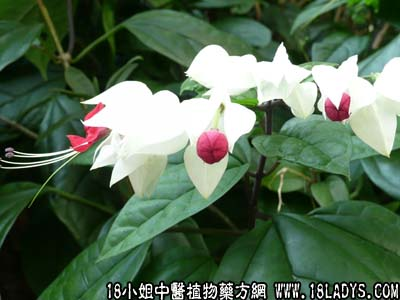

古籍名：蛇莓《本草集注》。
别名：龙珠草、一点红。
植物名：蛇莓。
生长环境：本品为多年生，多少被毛的草本，常蔓生于草地上。
分布：印度、我国、日本和印尼；我国各省均产。
入药部分：全草。
采集期：春夏秋三季。
自采地点：荒地。
性味：性凉、味淡。
功能：清肠胃湿热、消肿、解毒、止痛、止痒。
主治、用量和用法：1、苦伤咳血：干用5钱至1两，清水煎服，或加猪瘦肉同煎；2、痢疾；3、下血；4、眼热；用法均同上；5、疮疡：干用适量，煎谁外洗；6、生蛇：用法同上；7、蛇头缠指：生用适量，捣烂敷患处。
验方1：（治苦伤咳血方）龙吐珠5钱、东风桔5钱、红丝线5钱、园珠柏5钱、清水三碗，煎成一碗服。
（方解）本方龙吐珠为治苦伤咳血之药；东风桔止咳疗肺；红丝线止血清金；园珠柏开郁止血。如由于精神或体力过劳而致之苦伤咳血，运用此方，效果良好。
（方歌）苦伤咳血可无虞，园珠柏合龙吐珠，东风桔与红丝线，血止咳宁肺自舒。
验方2：（治肠胃湿热、下痢便血方）龙吐珠5钱、火炭母8钱、羊蹄草5钱、井栏茜5钱、清水三碗、煎成一碗服。
（方解）大肠湿热和痢疾，皆由饮食不节，多食甘脆肥浓及生冷之品而成，方中龙吐珠，《别泉》称为“蛇莓”，治胸腹大热不止，火炭母、羊蹄草、井栏茜善治痢，合为治痢和治大肠热之剂。
（方歌）湿热下痢便血齐，龙吐珠与井栏茜，火炭母合羊蹄草，清肠去湿止痢剂。
验方3：（治眼热方）龙吐珠5钱、犁头草5钱、清水二碗，煎成一碗服。
（方解）方中龙吐珠凉血解毒；犁头草清肝解毒；热眼患者，用之有效。
（方歌）眼涩羞明看不舒，喜逢解热龙吐珠，清肝散毒犁头草，煎饮数剂眼热除。
本文解释权归中药大全，本文地址：https://www.daquan.com/post/1613.html